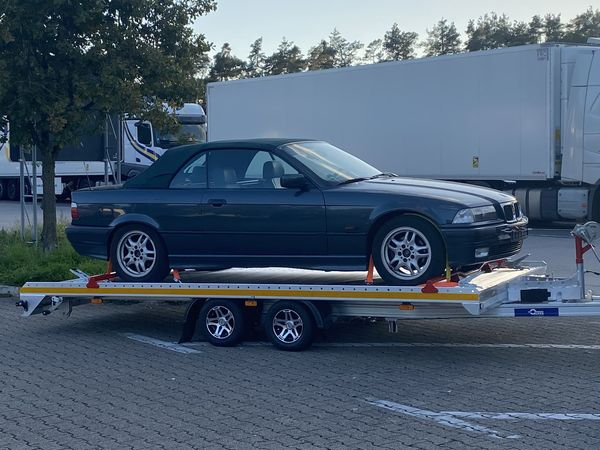

Restauration BMW E36 Cabrio
Dieser einzigartige Youngtimer aus erster Hand ist im Oktober 2022 zu mir gekommen um zu bleiben. Seine lückenlose Historie mit einem Prominenten Vorbesitzer Ehepaar aus meiner Jungend hat mich zu Erwerb des Fahrzeugs bewogen und macht jede Durchrostung unbedeutend. Mit Hilfe von Glasurit ist es sogar möglich den originalen Farbton in der neuen Wasser Basislack Reihe 100 zu reproduzieren, welches für mich einen ganz besonderen Stellenwert hat. Die einzelnen Fortschritte der Restauration werden Sie hier mit verfolgen können und für Tips zur Teilebeschaffung bin ich jederzeit offen und dankbar.
- Arbeitsschritt 1
Auf einem Anhänger
- Arbeitsschritt 2
Auf der Hebebühne in der Halle
- Arbeitsschritt 3
Seite in der Werkstatt
- Arbeitsschritt 4
Heck in der Werkstatt
- Arbeitsschritt 5
Auf der Hebebühne
- Arbeitsschritt 6
Innenraum ausgebaut
- Arbeitsschritt 7
Innenraum bei der Demontage
- Arbeitsschritt 8
Ausgebaute Tür
- Arbeitsschritt 9
Tür auf dem Gestell
- Arbeitsschritt 10
Rost am Schweller
- Arbeitsschritt 11
Rost am Unterboden
- Arbeitsschritt 12
Rost am Querlenker
- Arbeitsschritt 13
Hinterachse und Unterboden
- Arbeitsschritt 14
Rost am Achsträger
- Arbeitsschritt 15
Rost im Radhaus
- Arbeitsschritt 16
Querlenker
- Arbeitsschritt 17
Achsträger-Teile
- Arbeitsschritt 18
Differential-Teile
- Arbeitsschritt 19
Hinterachs-Teile
- Arbeitsschritt 20
Radnabe
- Arbeitsschritt 21
Grundierter Halter
- Arbeitsschritt 22
Radhaus blank
- Arbeitsschritt 23
Innenraum mit Mittelkonsole
- Arbeitsschritt 24
Heck
- Arbeitsschritt 25
Innenraum
- Arbeitsschritt 26
Kofferraum
- Arbeitsschritt 27
Motorraum
- Arbeitsschritt 28
Front
- Arbeitsschritt 29
Auf der Hebebühne